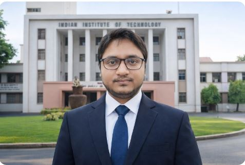

Email: aritra130.basu@gmail.com | Contact: 7003797263
Pursuing M.Tech in Vision and Intelligent Systems, IIT Kharagpur
5 year experienced AWS developer in Tata Consultancy Services
Download ResumePursing Mtech in Vision and Intelligent Systems from IIT Kharagpur, 5year experienced AWS developer in TATA Consultancy Services, worked in data ingestion, data integration, Different AWS services like AWS lamba, DynamoDB, Step Function, SAM etc.
To obtain a competitive, responsible and rewarding position in an esteemed organization which offers stimulating and challenging work environment with ample scope of growth in the areas of AWS and Devops.
| Company | Start Date | End Date | Total Experience |
|---|---|---|---|
| Tata Consultancy Services | 02/11/2020 | 25/07/2025 | 4.72 years |
Pursuing Research on Learning Theory and Optimal transport, in IIT Kharagpur, and project on the same.
Presented on Pixel reconstruction of a distorted image using Quaternion Matrix
Role: AWS Engineer | Duration: June 2022 – Present
Extracted data such as pension number, national insurance number, surname from handwritten forms and automated processing using AWS services. Integrated with downstream and on-premise systems.
Role: AWS Engineer | Duration: 3 months
Role: ML Engineer | Duration: Jan 2021 – April 2022
ML-based root cause analysis for pharmaceutical plant data.
Role: AWS Developer | Duration: Feb 2023 – Dec 2024
Role: AWS Developer | Duration: Feb 2024 – Present